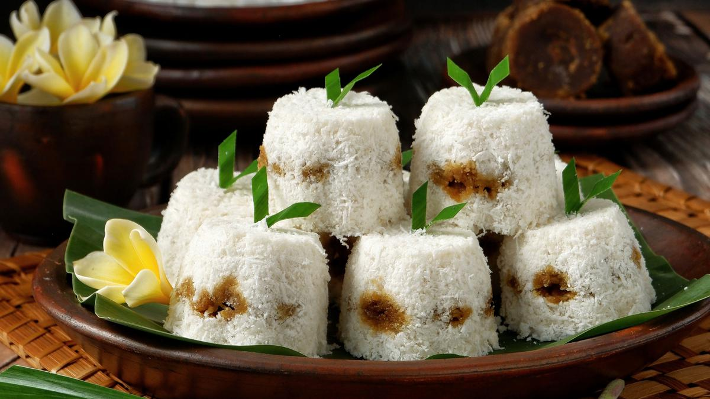

| Awug adalah kue khas majalengka asal Kue ini berwarna putih bercampur dengan warna coklat yang berasal dari campuran tepung beras, kelapa, aroma daun pandan dan gula merah yang dikukus di dalam aseupan (kukusan berbentuk lancip untuk membuat tumpeng) dengan beralaskan daun pisang. |  |